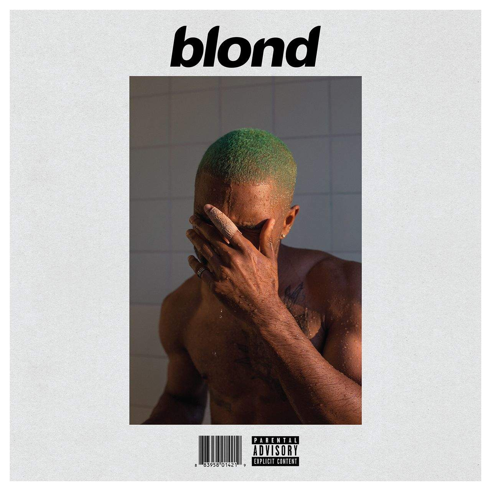

My Favorite Songs
- Dunno
- So it goes
- Come Back to Earth
- Close to You
- Count Me Out
- Dorothea
- Good Days
- All I Need To Hear
- Golden Slumbers
- Moon River
- Dunno

Dunno - Mac Miller
- Genre: Hip-Hop/Rap
- Release Date: 2018
- Why it's a top song:
- "Dunno" is a soulful and introspective hip-hop track by Mac Miller. It's a favorite because of its emotionally raw lyrics and smooth production, which capture the artist's vulnerability and self-reflection.
- Description:
- "Dunno" is a reflective song where Mac Miller contemplates his life and relationships, expressing vulnerability and a sense of longing.
- So it goes
So it goes - Mac Miller
- Genre: Hip-Hop/Rap
- Release Date: 2018
- Why it's a top song:
- This song, also by Mac Miller, stands out due to its contemplative lyrics and atmospheric sound. It's a reflection on life's unpredictability and serves as a poignant reminder of the artist's talent.
- Description:
- "So it goes" is a contemplative track that delves into the uncertainties of life, offering a profound perspective on existence.
- Come Back to Earth
Come Back to Earth - Mac Miller
- Genre: Hip-Hop/Rap
- Release Date: 2018
- Why it's a top song:
- Mac Miller's "Come Back to Earth" is a beautifully crafted song that showcases his emotional depth. It's a favorite for its sincerity and the sense of longing it conveys.
- Description:
- "Come back to Earth" is a heartfelt track where Mac Miller expresses a desire to return to a simpler and more genuine existence.
- Close to You

Close to You - Frank Ocean
- Genre: R&B/Soul
- Release Date: 2016
- Why it's a top song:
- "Close to You" by Frank Ocean is known for its soulful R&B sound and heartfelt lyrics. It's a top choice for its ability to evoke strong emotions and create a sense of intimacy.
- Description:
- "Close to You" is a soulful and emotional song where Frank Ocean expresses his longing for a deeper connection with someone he cares about.
- Count Me Out
Count Me Out - Kendrick Lamar
- Genre: Hip-Hop/Rap
- Release Date: 2020
- Why it's a top song:
- Kendrick Lamar's "Count Me Out" is a powerful rap track known for its thought-provoking lyrics and impactful delivery. It's a favorite for its social commentary and lyrical depth.
- Description:
- "Count Me Out" is a socially conscious song where Kendrick Lamar addresses issues of exclusion and discrimination, delivering a message of resilience.
- Dorothea
Dorothea - Taylor Swift
- Genre: Pop/Folk
- Release Date: 2020
- Why it's a top song:
- "Dorothea" by Taylor Swift is a melodic pop-folk song that captures a sense of nostalgia and longing. It's a favorite for its storytelling and the emotional connection it creates.
- Description:
- "Dorothea" is a song where Taylor Swift reflects on a past relationship and imagines reconnecting with a friend from her hometown.
- Good Days
Good Days - SZA
- Genre: R&B/Soul
- Release Date: 2020
- Why it's a top song:
- SZA's "Good Days" is a soothing R&B track known for its mesmerizing vocals and reflective lyrics. It's a favorite for its calming and introspective qualities.
- Description:
- "Good Days" is a tranquil and introspective song where SZA explores themes of self-discovery and personal growth.
- All I Need To Hear
All I Need To Hear - The 1975
- Genre: Pop/Rock
- Release Date: 2020
- Why it's a top song:
- This song by The 1975 is a pop-rock anthem with catchy melodies and relatable lyrics. It's a favorite for its upbeat and feel-good vibe.
- Description:
- "All I Need To Hear" is an upbeat and catchy pop-rock song by The 1975 that's easy to sing along to and offers a positive message.
- Golden Slumbers
Golden Slumbers - The Beatles
- Genre: Rock/Pop
- Release Date: 1969
- Why it's a top song:
- "Golden Slumbers" is a classic Beatles track that stands the test of time. It's a top choice for its timeless beauty and iconic status in music history.
- Description:
- "Golden Slumbers" is a timeless and melodic song by The Beatles, known for its soothing and comforting qualities.
- Moon River
Moon River - Frank Ocean
- Genre: R&B/Soul
- Release Date: 2018
- Why it's a top song:
- Frank Ocean's rendition of "Moon River" is a soulful and dreamy take on a classic. It's a favorite for its unique interpretation and the artist's distinctive vocal style.
- Description:
- Frank Ocean's version of "Moon River" infuses new life into the timeless classic, adding his signature soulful touch and making it a captivating and emotional listening experience.